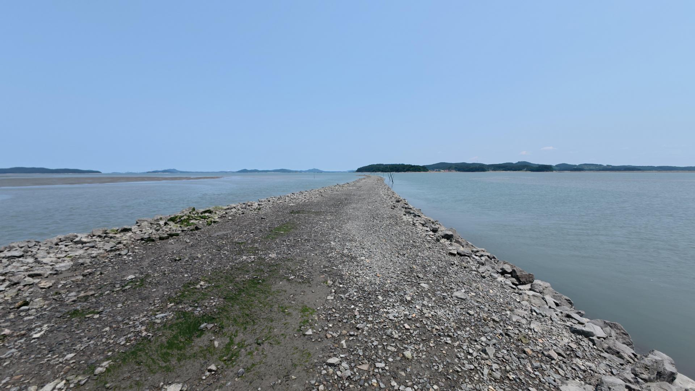

TRAVEL
알펜로제 추천 코스
01
카페호리
주소 : 충남 서산시 팔봉면 범머리길 454-18
시원한 바다 뷰와 넓은 정원!
커피 한잔 하시면서 산책도 하고
제대로 된 경치를 즐기실 수 있습니다!
사진 찍기에도 정말 좋은 스팟,
탁 트인 바다를 바라보며 여유를 즐기시는건 어떠세요?
02
민어도선착장
주소 : 충남 태안군 원북면 방갈리
태안의 숨은 명소!
SNS 핫플로 유명한 민어도
관광지로 각광받고 있는 캠핑 장소로도 유명한 곳입니다.
낚시 하기에도 좋고 바닷바람 맞기 정말 좋은
핫플레이스입니다.
03
학암포 해수욕장
주소 : 충남 태안군 원북면 옥파로 1163-27
넓은 백사장과 고운 입자!
아름다운 일몰 명소!
조용하고 한적한 해수욕장
앞바다에 있는 섬은 썰물 때 걸어서 건너갈 수 있습니다.
갯바위에서는 조개·게 등을 잡을 수 있습니다.